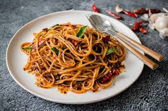

Garlic Noodles

Description
These deceivingly simple, yet devastatingly delicious garlic noodles were invented back in the '70s at a restaurant in San Francisco called Thanh Long. Usually served with roasted Dungeness crab, the recipe is a very closely guarded family secret, but after lots of investigation, and even more experimentation, I think this is very close.
Apparently, one of their "secret" ingredients is Maggi® Seasoning Sauce, which I decided not to use, since I'm not sure how easy it is for the average person to find. Besides, I think my assortment of savory, umami-rich substitutes did the job quite nicely, and everything in the ingredient list can be found at any large grocery store.
Ingredients
For the Secret Sauce
- 2 tablespoons soy sauce
- 1 tbsp oyster sauce
- 1 tsp Worcestershire sauce
- 2 tsp fish sauce
- 1/4 tsp sesame oil
- 1 pinch cayenne pepper
For the Noodles
- 8 cloves garlic, minced
- 4 tbsp unsalted butter
- 1/4 cup finely grated cheese
- 1 tbsp chopped green onion
- 6 ounces spaghetti
- 1 pinch red pepper flakes
Steps
- Stir soy sauce, oyster sauce, Worcestershire sauce, fish sauce, sesame oil, and cayenne pepper together in a small bowl for the secret sauce.
- Place secret sauce near the stove. Place garlic, butter, Parmesan cheese, and green onion in individual bowls within easy reach.
- Melt butter in a skillet over medium heat. Add garlic; cook and stir just until fragrant, about 1 minute. Quickly stir in the secret sauce and turn off the heat.
- Bring a large pot of lightly salted water to a boil. Cook spaghetti in the boiling water, stirring occasionally, until tender yet slightly firm to the bite, about 12 minutes.
- Transfer spaghetti into the sauce using tongs, bringing some of the cooking water with it. Toss until well coated and stir in Parmesan cheese. Splash in more pasta water if noodles are too dry.
- Plate noodles. Garnish with red pepper flakes and green onions.